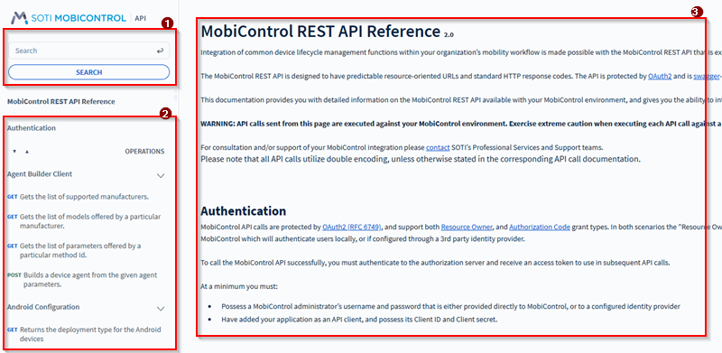
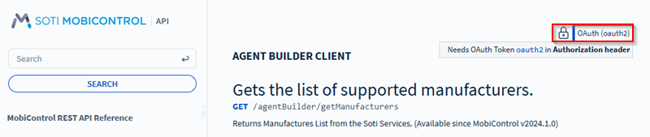
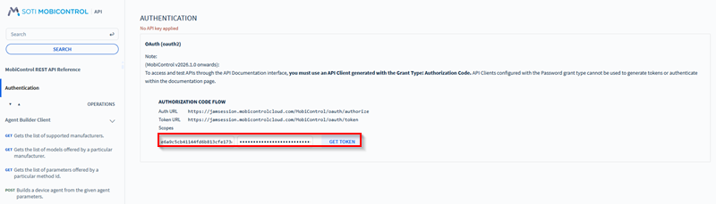
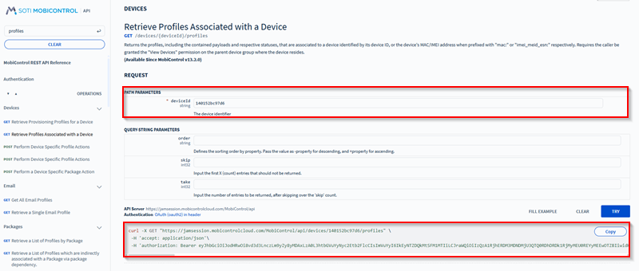
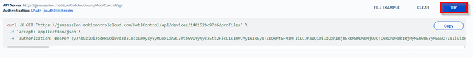
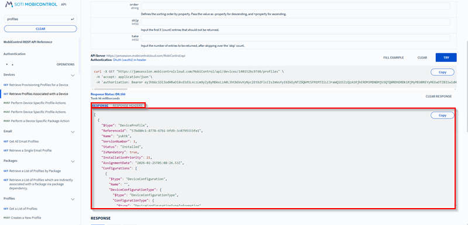
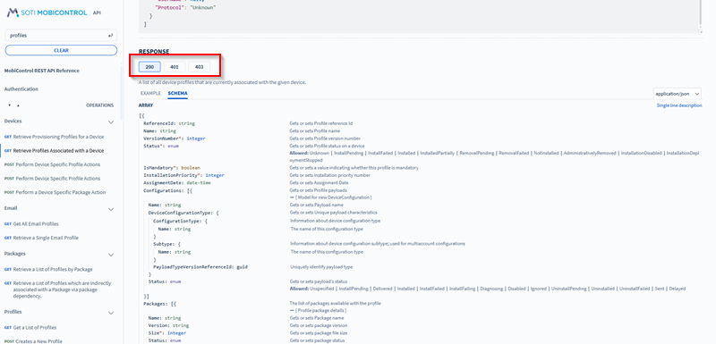

Technical explanation · 2026-03-06 · trunk
A two-command entry point became an eight-command API portal walkthrough covering permissions, OAuth, request parameters, execution and responses, with nine image elements.
Counts describe source structure, including commands in substeps. More elements do not by themselves prove better usability.
Before · parent revision
Using the SOTI MobiControl REST API
About this task
Integrate SOTI MobiControl into your enterprise mobility workflow or partner applications using our RESTful web service API. SOTI MobiControl provides an interactive environment where you can experiment with the REST API.
To get to your interactive REST API environment:
Procedure
- Log into your SOTI MobiControl console.
- In the address bar of the web browser, replace everything afterFor example, change
MobiControl/withapiand go to the new web page.https://soti.sotidemo.com/MobiControl/WebConsole/home/devicestohttps://soti.sotidemo.com/MobiControl/api.
Result
You have entered the interactive environment of the SOTI MobiControl REST API service. Detailed documentation on the available APIs is available directly within the API reference.
The syntax for filtering expressions differs between GET
/devices/searchGET
/devices
Use advanced search
expressions for GET /devices/searchfilter=BatteryStatus%3E38%20AND%20CellularCarrier%3D%27Communications%20Network%27
Use name value pairs for GET /devices{Family}:{Linux},
{IsAgentOnline}:{TRUE}
After · committed revision
Access and Use the SOTI MobiControl API Documentation Portal
Before you begin
You must have:- Manage API clients permission. See General Permissions.
- The Allow Access to API Documentation option enabled. See Managing API Clients.
About this task
The SOTI MobiControl API documentation portal provides an interactive environment where administrators and developers can explore, test, and validate Representational State Transfer (REST) API endpoints. They can use these endpoints to integrate SOTI MobiControl with enterprise mobility workflows or external applications.The documentation portal presents APIs in a structured interface that makes it easier to discover endpoints, review request parameters, and understand response formats. APIs are organized into categorized sections such as authentication, agents, client operations, and configuration APIs, allowing developers to quickly locate the endpoints relevant to their integration tasks.
Each endpoint includes an introduction describing what the API returns, along with a request section where you can specify required parameters. After the parameters are entered, the portal automatically generates the REST request syntax that can be copied or executed directly from the interface.
The documentation interface includes:

- Search and advanced search capabilities to quickly locate APIs.
- A categorized navigation panel that organizes APIs into logical sections.
- Detailed endpoint information including request parameters and response schemas.
Procedure
- Log in to your SOTI MobiControl web console.
- In the browser address bar, replace everything afterFor example, change https://soti.sotidemo.com/MobiControl/WebConsole/home/devices to https://soti.sotidemo.com/MobiControl/api
MobiControl/withapi.Result: The SOTI MobiControl API documentation portal opens. - Use the navigation panel on the left to browse API categories or use the search bar to locate a specific API endpoint.
- Select an API endpoint to view its introduction, request parameters, schema, and response details.
- Select the OAuth (oauth2) lock icon to authenticate before executing API requests if required.

Selecting the OAuth lock icon. Result: This opens an authentication page. Enter your Client ID and Client Secret to get the authentication token required by selecting Get Token.
Retrieving a token for authentication. - In the Request section, enter the required path parameters. Mandatory parameters are marked with an asterisk (*).Result: The documentation portal automatically generates the REST API request syntax based on the parameters entered. The generated request displays the HTTP method, endpoint URL, and required headers.

Specifying the path parameters. - Test the request directly from the documentation portal by selecting Try.

Trying the generated API command. Result: If the request is executed, the response is displayed in the portal. Review the results of the request. The portal displays the API response in the following sections:- Response: Shows the returned payload from the API.
- Response Headers: Displays HTTP headers returned by the server.

Reviewing the API response. - Scroll down to the Response section to find the response codes for the API command along with its example and schema.
- 200: Success.
- 400: Contract validation failed.
- 401: Unauthorized access.
- 403: Forbidden.

Reviewing response codes.
Result
You have accessed the SOTI MobiControl API documentation portal and can browse available APIs, review endpoint details, generate REST requests, and test API calls directly from the documentation interface. The response results displayed after execution help validate request parameters and troubleshoot integration workflows.Highlighted changes
Green marks additions; red marks removals. Historical review comments are shown in amber. Colour is also supported by placement and strike-through.
Using the SOTI MobiControl REST API
About this task
Integrate SOTI MobiControl into your enterprise mobility workflow or partner applications using our RESTful web service API. SOTI MobiControl provides an interactive environment where you can experiment with the REST API.
To get to your interactive REST API environment:
Procedure
- Log into your SOTI MobiControl console.
- In the address bar of the web browser, replace everything afterFor example, change
MobiControl/withapiand go to the new web page.https://soti.sotidemo.com/MobiControl/WebConsole/home/devicestohttps://soti.sotidemo.com/MobiControl/api.
Result
You have entered the interactive environment of the SOTI MobiControl REST API service. Detailed documentation on the available APIs is available directly within the API reference.
The syntax for filtering expressions differs between GET
/devices/searchGET
/devices
Use advanced search
expressions for GET /devices/searchfilter=BatteryStatus%3E38%20AND%20CellularCarrier%3D%27Communications%20Network%27
Use name value pairs for GET /devices{Family}:{Linux},
{IsAgentOnline}:{TRUE}
Access and Use the SOTI MobiControl API Documentation Portal
Before you begin
You must have:- Manage API clients permission. See General Permissions.
- The Allow Access to API Documentation option enabled. See Managing API Clients.
About this task
The SOTI MobiControl API documentation portal provides an interactive environment where administrators and developers can explore, test, and validate Representational State Transfer (REST) API endpoints. They can use these endpoints to integrate SOTI MobiControl with enterprise mobility workflows or external applications.The documentation portal presents APIs in a structured interface that makes it easier to discover endpoints, review request parameters, and understand response formats. APIs are organized into categorized sections such as authentication, agents, client operations, and configuration APIs, allowing developers to quickly locate the endpoints relevant to their integration tasks.
Each endpoint includes an introduction describing what the API returns, along with a request section where you can specify required parameters. After the parameters are entered, the portal automatically generates the REST request syntax that can be copied or executed directly from the interface.
The documentation interface includes:
- Search and advanced search capabilities to quickly locate APIs.
- A categorized navigation panel that organizes APIs into logical sections.
- Detailed endpoint information including request parameters and response schemas.
Procedure
- Log in to your SOTI MobiControl web console.
- In the browser address bar, replace everything afterFor example, change https://soti.sotidemo.com/MobiControl/WebConsole/home/devices to https://soti.sotidemo.com/MobiControl/api
MobiControl/withapi.Result: The SOTI MobiControl API documentation portal opens. - Use the navigation panel on the left to browse API categories or use the search bar to locate a specific API endpoint.
- Select an API endpoint to view its introduction, request parameters, schema, and response details.
- Select the OAuth (oauth2) lock icon to authenticate before executing API requests if required.
- In the Request section, enter the required path parameters. Mandatory parameters are marked with an asterisk (*).
- Test the request directly from the documentation portal by selecting Try.Result: If the request is executed, the response is displayed in the portal. Review the results of the request. The portal displays the API response in the following sections:
- Response: Shows the returned payload from the API.
- Response Headers: Displays HTTP headers returned by the server.
Result
You have accessed the SOTI MobiControl API documentation portal and can browse available APIs, review endpoint details, generate REST requests, and test API calls directly from the documentation interface. The response results displayed after execution help validate request parameters and troubleshoot integration workflows.WYSIWYG-style approximation using the SOTI diff renderer. This is not an Oxygen/DITA-OT build or a live help page. Keyrefs, conrefs, conditional content and related-link navigation may require the original publishing environment. Screenshots are extracted from the matching revision.